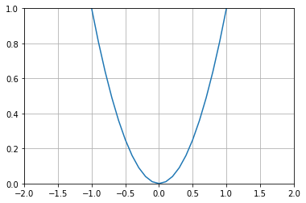
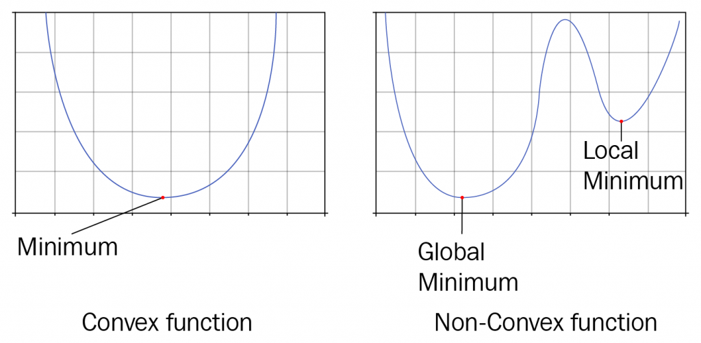
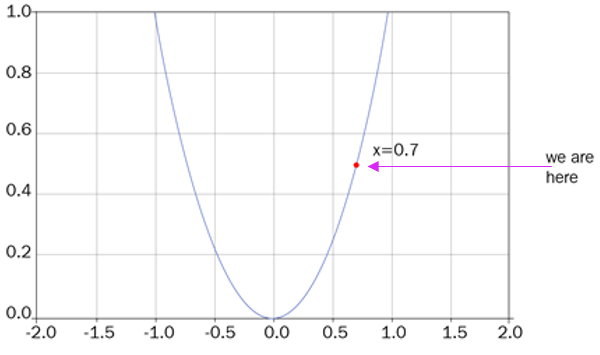
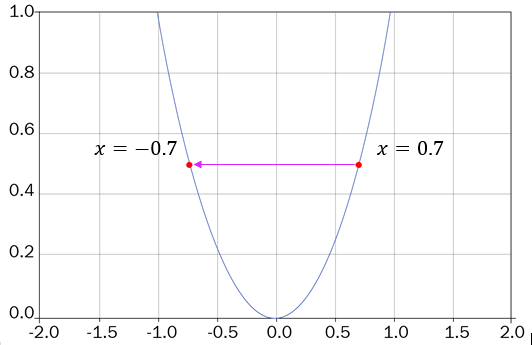
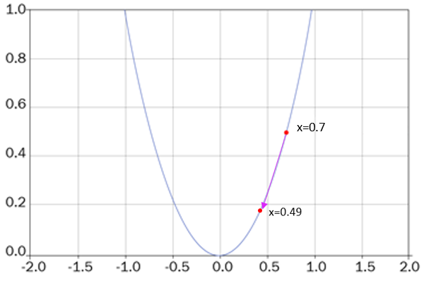
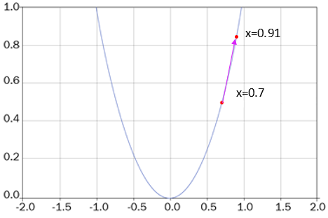
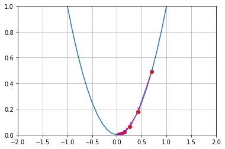
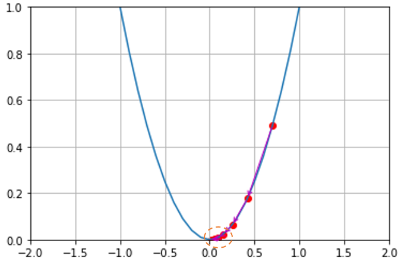

Autoencoders VI: Gradiente descendiente#
Before going ahead, first, let us understand the basics. What is a function in mathematics? A function represents the relation between input and output. We generally use \(f\) to denote the function. For instance, \(f(x) = x^2\) implies a function which takes as \(x\) an input and returns \(x^2\) as an output. It can also be represented as \( y = x^2\). So, we have a function \( y = x^2\) , we can plot and see what our function looks like:

A minimum of the function is called the smallest value of a function. Like as you can see in the above figure, a minimum of the \(x^2\) function lies at 0. The above function is called a convex function where we have only one minimum value. A function is called a nonconvex function where there is more than one minimum value. As shown in the following figure, a nonconvex function can have many local minima and one global minimum value whereas a convex function has only one global minimum value.

By looking at the graph of \(x^2\) function we easily said that it has its minimum value at \(x=0\) . But how can we find the minimum value of a function mathematically? First, let us assume, x=0.7 Thus, we are at a position where x = 0.7 as shown in the following graph.

Now we need to go to zero, which is our minimum value, but how can reach there? We can reach there by calculating the derivative of the function \(y=x^2\). So derivative of the function \(y\) with respect to \(x\) is given as,
As we are at x=0.7, substituting this in the above equation, we get,
After calculating the derivative, we update our position of \(x\) by the following update rule:
As shown in the below figure, first we were at x=0.7 but after computing gradient, we are now at the updated position x =-0.7. But this is something we don’t want. Because we missed our minimum value which is x=0 and reached somewhere else.

So, to avoid this we introduce a new parameter called learning rate \(\alpha\). It helps us to slow down our gradient steps so that we won’t miss out the minimal point. We multiply our gradients by the learning rate and update the \(x\) value as,
Let us say \(\alpha = 0.15\) then,
As shown in the below figure, after multiplying the gradients with learning rate, with the updated x value, we descended from the initial position x=0.7 to x =0.49.

But still, this is not our optimal minimum value. We need to go further down until we reach the minimum value. i.e x= 0. So for some number n of iterations, we have to repeat the same process until we reach the minimal point. That is,
Okay, why is there minus in the above equation? That is why are subtracting x from the \(\alpha \cdot \frac{d y}{d x}\) Why can’t we add them and have our equation as \(x=x+\alpha \cdot \frac{d y}{d x}\)?
Because we are finding the minimum of a function so we need to go downwards. If we add x with \(\alpha . \frac{d y}{d x}\), then we go upwards on every iteration and we cannot find the minimum value as shown in the following figure:

Thus, on every iteration, we compute gradients of y with respect to x i.e \(\frac{d y}{d x}\) multiply the gradients with learning rate i.e \(\alpha . \frac{d y}{d x}\) and subtract it from x value and get the new updated x value:
By repeating this step on every iteration, we go downwards on our cost function and reach the minimum point. As shown in the below figure, from initial position 0.7 we reached 0.49 and then from there we reached 0.2 then after several iterations we reached the minimum point 0.

We say we attained convergence when we reach the minimum of the function. But the question is, how do we know that we attained convergence? In our example, \(y=x^{2}\), we know that the minimum value is 0. So when we reached 0 we said that we found the minimum value. i.e attained the convergence. But how can we mathematically say that 0 is the minimum value of the function \(y=x^{2}\)?
Let us take a closer look at the below graph which shows how the value of x is getting changed on every iteration. As you may notice, the value of x is 0.009 in the 5th iteration and it is 0.008 in 6th iteration and it is 0.007 in 7th iteration. If you see there is no huge difference between all these iterations 5, 6 and 7. When there a is very less change in x value over iterations, then we can conclude that we attained convergence.

Okay, but what is the use of all this? Why are we trying to find the minimum of a function? When training a model our goal is to minimize the loss function of the model. Thus, with gradient descent, we can find the minimum of the cost function. Finding the minimum of the cost function gives us an optimal parameter of the model with which we can obtain the minimal loss. In general, we denote the parameters of the model \(\theta\). The below equation is called the parameter update rule or weight update rule.
Where,
\( \theta \) is the parameter of the model
\(\alpha\) is the learning rate
\(\nabla_{\theta} J(\theta)\) is the gradients of loss function \(J\) with respect to parameter \(\theta\)